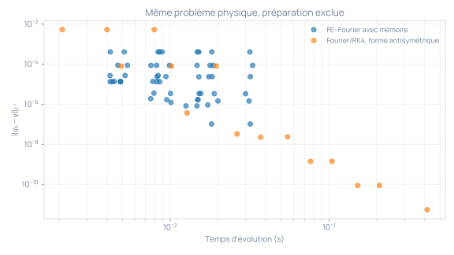

Point d'étape de recherche du 16/11/2026 à 10:58. La branche SLFE contient des prototypes GPU distincts de l'interface de production Rodin. La campagne de nuit et le premier rapport incrémental restent disponibles séparément.
Le transport par projection statique est étendu à un flot cellulaire non séparable. Trois réalisations sont comparées : des supports DG orientés, un support DG unique avec changements de coordonnées incrémentaux, puis un support de Fourier unitaire. Le dernier est couplé aux triangles par deux projections adjointes FE–DG–Fourier.
Une différence structurelle apparaît entre le retour FE après chaque pas et la conservation d'un état auxiliaire. Le retour répété détruit en général l'ordre temporel élevé à espaces fixés. Conserver la mémoire auxiliaire permet de composer des sous-transports unitaires d'ordre quatre. Une règle de mise à jour de cette mémoire permet ensuite d'appliquer une opération physique directement dans l'espace FE.
Advection : w⁺ = Sw, v⁺ = v + R*(w⁺ − w). Physique FE : v★ = Gv, w★ = w + R(v★ − v).
La note memory_theory.pdf établit une borne d'énergie dans un espace augmenté, l'ordre temporel du couplage à espaces fixés et des bornes conditionnelles de consistance. La racine du défaut de projection intervient dans la preuve, sans être calculée par l'algorithme à deux variables.
Le domaine est le tore unité. Le champ initial est une bosse gaussienne périodique. La fonction de courant est sin²(πx) sin²(πy)/π. Les essais utilisent soit sa vitesse stationnaire, soit cette vitesse multipliée par cos(πt). Les triangles sont perturbés et leurs diagonales varient. Les normes FE sont les normes L2 des polynômes reconstruits, avec une quadrature indépendante pour l'erreur. La solution de référence est obtenue par caractéristiques RK4 GPU, avec vérification par doublement de la résolution.
Les résultats principaux sont évalués à t = 0,5. Le retour à t = 1 du flot réversible est un contrôle de réversibilité ; il ne suffit pas à mesurer la précision du transport. Toutes les simulations, projections, décompositions spectrales et réductions numériques s'exécutent sur RTX 5090 en double précision. Symox prépare les polynômes exacts.
417 cas principaux sont enregistrés dans les JSONL, avec 0 échec d'exécution. S'y ajoutent quatre validations du couplage augmenté, six comparaisons des graphes CUDA avec les opérateurs ordinaires et huit validations FE–Fourier sous Compute Sanitizer.
Compute Sanitizer : ========= ERROR SUMMARY: 0 errors
Les opérateurs de projection et les transports complets sont vérifiés par SVD dans la norme de masse sur de petits systèmes. Les adjoints sont comparés à une transposition dense indépendante. Les moments DG polynomiaux sont comparés à leur construction par quadrature. Les moments DG–Fourier sont recomputés avec 48 points de Gauss au lieu de 32.
| p | n | DOF FE | Erreur L2 | Évolution (s) | Préparation (s) |
|---|---|---|---|---|---|
| 3 | 16 | 5120 | 0.0004028 | 0.03175 | 0.03509 |
| 3 | 32 | 20480 | 2.349e-05 | 0.03196 | 0.0539 |
| 3 | 64 | 81920 | 1.428e-06 | 0.03138 | 0.1082 |
| 4 | 16 | 7680 | 8.547e-05 | 0.03303 | 0.06505 |
| 4 | 32 | 30720 | 3.316e-06 | 0.02983 | 0.1076 |
| 4 | 64 | 122880 | 1.02e-07 | 0.03194 | 0.3472 |
Ces cas utilisent 95² modes auxiliaires et 32 pas d'ordre quatre avec mémoire. Le temps d'évolution comprend les échanges FE initiaux et finaux. La préparation comprend le couplage statique, les plans FFT, l'échauffement et la capture du graphe CUDA. Les nombres sont des mesures de campagne, sans intervalle statistique.

La référence Fourier/RK4 est compétitive et atteint de très petites erreurs avec peu d'inconnues sur ce problème lisse. Les essais ne démontrent pas une supériorité générale du couplage FE. Une comparaison avec un solveur DG direct de même degré, sur le même maillage et à erreur fixée, reste nécessaire.
| p | Facteur | Défaut isométrie | Rapport erreur, λ=1 | Rapport erreur, λ=10 |
|---|---|---|---|---|
| 1 | 1 | 2.442e-15 | 4.001 | 3.997 |
| 2 | 1 | 1.776e-15 | 4.003 | 3.998 |
| 2 | 2 | 1.665e-15 | 4.011 | 4.007 |
| 3 | 1 | 2.554e-15 | 4.005 | 4 |
Le rapport proche de quatre correspond au dernier doublement du nombre de pas d'une composition de Strang. La référence est l'exponentielle dense GPU du générateur augmenté. Les sous-transports sont exacts dans ce contrôle, afin d'isoler l'erreur de couplage. Un premier essai avec des sous-transports d'ordre quatre mélangeait les deux erreurs et n'atteignait pas encore ce régime asymptotique ; le diagnostic est conservé.

Le test physique utilise une vitesse stationnaire et une réaction spatialement variable. La masse décroît physiquement ; la propriété contrôlée est la borne d'énergie, et l'erreur est évaluée contre la solution caractéristique. Les plafonds d'erreur aux petits pas diminuent avec le raffinement du maillage.
Les ingrédients ont des antécédents : transfert d'incréments FLIP, projections adjointes, dilatations d'opérateurs, transformations DG–Fourier et compositions de Yoshida. Aucune priorité scientifique n'est revendiquée à ce stade. La piste à approfondir est le couplage FE avec mémoire, son analyse de consistance et sa réalisation rapide, notamment lorsque plusieurs champs partagent le transport.
Les expériences actuelles couvrent un domaine périodique et une vitesse prescrite à quatre modes. Les frontières, les vitesses FE arbitraires, la compression, les flux locaux, le calcul distribué et une preuve générale de convergence restent ouverts. Les graphes CUDA accélèrent l'exécution sans changer les opérateurs numériques ; leurs résultats ont été comparés directement à ceux des exécutions ordinaires.
Les scripts day_study.py, fourier_study.py, spectral_reference.py, memory_study.py et reaction_study.py acceptent un répertoire de sortie explicite. Les JSONL contiennent les paramètres et les empreintes des sources. Les preuves sont dans incremental_theory.tex et memory_theory.tex. Aucun code de production Rodin ni fichier de la bibliothèque HySoP n'est modifié.